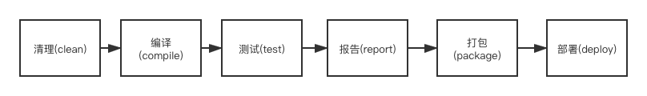

Maven 入门
2021-08-20 15:47 字数：3598 标签： Maven什么是Maven
Apache Maven 是一个软件项目管理工具。基于项目对象模型的概念，它可以通过配置信息来管理项目的构建、报告和文档这些行为。 其目标旨在：
- 使项目的构建过程简单
- 提供一种统一的构建系统
- 提供优质项目信息
- 鼓励更好的开发实践
它的重要功能在于项目构建和依赖管理
Maven项目构建过程
项目构建的过程大致为以下：

-
清理：删除之前的构建结果（targe目录），重新构建
-
编译：编译Java源代码为字节码（src和test目录下的Java文件）
-
测试：对项目的所有测试单元进行测试
-
报告：每项测试后以标准格式记录和展示测试结果
-
打包：将项目压缩为一个用于安装或部署的文件（格式jar或war）
-
部署：将打包结果部署到远程仓库或服务器运行
Maven生命周期
Maven生命周期就是为了对所有的构建过程进行抽象和统一。包括项目清理、初始化、编译、打包、测试、部署等几乎所有构建步骤。生命周期可以理解为构建工程的流程。
Maven有三套独立的生命周期，分别为 clean、default和site
-
clean lifecycle：进行项目构建前的清理工作
-
default lifecycle：项目构建过程的核心部分，如：编译、测试、打包、部署等等
-
site lifecycle：生成项目报告和文档，还有发布站点
每套生命周期都有一系列的阶段（phase）组成，maven命令可以生命周期中一个阶段对应
clean生命周期
clean生命周期有相应插件绑定
它有三个阶段 pre-clean、clean和post-clean。绑定插件就是 maven-clean-plugin
| 周期 | 描述 |
|---|---|
| pre-clean | 在实际项目清理之前执行所需的流程 |
| clean | 删除先前构建生成的所有文件 |
| post-clean | 执行完成项目清理所需的流程 |
default生命周期
default生命周期有很多阶段，核心且重要的阶段：generate-resources、proccess-resources、compile、test-compile、package、install和depoly
| 周期 | 描述 |
|---|---|
| generate-resources | 生成包含在包中的资源 |
| proccess-resources | 将资源复制并处理到目标目录中，准备打包 |
| compile | 编译项目的源代码 |
| test-compile | 将测试源代码编译到测试目标目录中 |
| test | 使用合适的单元测试框架（通常junit）运行测试。 这些测试不应该要求打包或部署代码 |
| package | 获取编译后的代码并将其打包为可分发的格式，例如 JAR |
| install | 将包安装到本地存储库中，用作本地其他项目的依赖项 |
| depoly | 在集成或发布环境中完成，将最终包复制到远程存储库以与其他开发人员和项目共享 |
site生命周期
目的:建立和发布项目站点
| 周期 | 描述 |
|---|---|
| pre-site | 执行一些在生成项目站点之前需要完成的工作 |
| site | 生成项目站点文档 |
| post-site | 执行一些在生成项目站点之后需要完成的工作 |
| site-deploy | 将生成的项目站点发布到服务器上 |
项目构建常用命令
清理
清理项目，会直接删除target目录，成功的话，打印 BUILD SUCCESS
mvn clean
编译
生成target目录，在里面存放编译后的字节码
mvn compile
测试
完成单测。target目录生成surefire、surefire-reports（测试报告）和test-classes（存放测试用字节码）目录
mvn test
打包
执行打包工作，文件可能是jar或war
mvn package
安装
把打包好的文件安装到本地仓库（～/.m2/repository）
mvn install
复合操作
mvn clean compile
mvn clean test
mvn clean package
mvn clean install
配置文件pom.xml
了解一下 maven项目 的约定统一的目录，以 Java Web 项目为例：
.
├── pom.xml
├── src
│ ├── main
│ │ ├── java
│ │ ├── resources
│ │ └── webapp
│ │ ├── WEB-INF
│ │ │ └── web.xml
│ └── test
│ ├── java
│ └── resources
└── target
- pom.xml：maven项目的核心配置文件用来掌控项目，分别描述4种配置信息：基本配置、构建设置、额外项目信息以及环境配置
- src/main/java：存放Java源代码的目录
- src/main/resources：存放项目所使用的资源，比如：jdbc.properties、log4j.properties
- src/main/webapp：存放web项目相关的文件，比如静态页面文件（*.html等），里面WEB-INF文件夹存放web.xml配置Servlet。
- src/test：存放测试相关的源代码和资源
- targe：maven构建生成的目标文件夹
pom.xml所用标签的概况：
<project xmlns="http://maven.apache.org/POM/4.0.0" xmlns:xsi="http://www.w3.org/2001/XMLSchema-instance"
xsi:schemaLocation="http://maven.apache.org/POM/4.0.0 https://maven.apache.org/xsd/maven-4.0.0.xsd">
<modelVersion>4.0.0</modelVersion>
<!-- 基本配置 -->
<groupId>...</groupId>
<artifactId>...</artifactId>
<version>...</version>
<packaging>...</packaging>
<dependencies>...</dependencies>
<parent>...</parent>
<dependencyManagement>...</dependencyManagement>
<modules>...</modules>
<properties>...</properties>
<!-- 构建设置 -->
<build>...</build>
<reporting>...</reporting>
<!-- 额外配置信息 -->
<name>...</name>
<description>...</description>
<url>...</url>
<inceptionYear>...</inceptionYear>
<licenses>...</licenses>
<organization>...</organization>
<developers>...</developers>
<contributors>...</contributors>
<!-- 环境设置 -->
<issueManagement>...</issueManagement>
<ciManagement>...</ciManagement>
<mailingLists>...</mailingLists>
<scm>...</scm>
<prerequisites>...</prerequisites>
<repositories>...</repositories>
<pluginRepositories>...</pluginRepositories>
<distributionManagement>...</distributionManagement>
<profiles>...</profiles>
</project>
坐标
在Maven中坐标就是为了定位一个唯一确定的 jar 包。 构成坐标的三个要素：
- groupId：项目的组织名
- artifactId：项目实际名称，非目录名称
- version：当前项目或依赖jar包的版本号
如下描述：
<groupId>org.apache.commons</groupId>
<artifactId>commons-lang3</artifactId>
<version>3.12.0</version>
打包格式
单个模块打包格式为war（用于java web 项目），还有一种格式为jar（用于java项目）。多模块项目时，根项目应设置为pom。
<project xmlns="http://maven.apache.org/POM/4.0.0" xmlns:xsi="http://www.w3.org/2001/XMLSchema-instance"
xsi:schemaLocation="http://maven.apache.org/POM/4.0.0 https://maven.apache.org/xsd/maven-4.0.0.xsd">
...
<packaging>war</packaging>
...
</project>
属性
配置maven会使用的属性，使用属性的格式：${prperties下的属性名}，直接使用占位符的值。设置属性，如下：
<project>
...
<properties>
<maven.compiler.source>1.8</maven.compiler.source>
<maven.compiler.target>1.8</maven.compiler.target>
<!-- Following project.-properties are reserved for Maven in will become elements in a future POM definition. -->
<!-- Don't start your own properties properties with project. -->
<project.build.sourceEncoding>UTF-8</project.build.sourceEncoding>
<project.reporting.outputEncoding>UTF-8</project.reporting.outputEncoding>
</properties>
...
</project>
可以配置4种不同风格的属性：
- 环境变量 env.X，例如：${env.PATH}
- 项目变量 project.x，例如：${project.version}
- settings.xml文件中定义的变量 settings.x,例如：${settings.offline}
- Java系统属性，例如:${java.home}
- pom.xml中properteis里面
依赖
引入项目所需的依赖包。如何引入？导入依赖的坐标即可，如下描述：
<project xmlns="http://maven.apache.org/POM/4.0.0" xmlns:xsi="http://www.w3.org/2001/XMLSchema-instance"
xsi:schemaLocation="http://maven.apache.org/POM/4.0.0 https://maven.apache.org/xsd/maven-4.0.0.xsd">
...
<dependencies>
<dependency>
<groupId>junit</groupId>
<artifactId>junit</artifactId>
<version>4.12</version>
<type>jar</type>
<scope>test</scope>
<optional>true</optional>
</dependency>
...
</dependencies>
...
</project>
- type：引入依赖包的打包格式，一般忽略不写
- scope：项目依赖包的作用域，有那么几个：compile、test、provided和runtime等。
- optional: 表示可选依赖。决定是否向下传递，如果是true则不传递，如果是false就传递，默认 为false。
| 作用域 | 描述 |
|---|---|
| compile | 这是默认范围，如果没有指定则使用。 编译依赖项在所有类路径中都可用。 此外，这些依赖关系会传播到依赖项目。 |
| test | 这个作用域表示应用程序的正常使用不需要依赖，只在测试编译和执行阶段可用。 它不是传递性的。 |
| provided | 这很像 compile，但表明希望 JDK 或容器在运行时提供它。 它仅在编译和测试类路径上可用，并且不可传递。 |
| runtime | 此范围表示该依赖项不是编译所必需的，而是执行所必需的。 它在运行时和测试类路径中，但不在编译类路径中。 |
假如A依赖B，B依赖C，那么A间接依赖C
依赖冲突时，发生：
- 如果直接与间接依赖中包含有同一个坐标不同版本的资源依赖，以直接依赖的版本为准(就近原则)
- 如果直接依赖中包含有同一个坐标不同版本的资源依赖，以配置顺序下方的版本为准(就近原则)
排除依赖
假如项目X依赖项目 maven-embedder，maven-embedder 依赖项目 maven-core,但X不依赖项目 maven-core。所以在引入 maven-embedder时，要排除 maven-core。
<project xmlns="http://maven.apache.org/POM/4.0.0" xmlns:xsi="http://www.w3.org/2001/XMLSchema-instance"
xsi:schemaLocation="http://maven.apache.org/POM/4.0.0 https://maven.apache.org/xsd/maven-4.0.0.xsd">
...
<dependencies>
<dependency>
<groupId>org.apache.maven</groupId>
<artifactId>maven-embedder</artifactId>
<version>2.0</version>
<exclusions>
<exclusion>
<groupId>org.apache.maven</groupId>
<artifactId>maven-core</artifactId>
</exclusion>
</exclusions>
</dependency>
...
</dependencies>
...
</project>
插件
插件配置概况如下：
<project xmlns="http://maven.apache.org/POM/4.0.0" xmlns:xsi="http://www.w3.org/2001/XMLSchema-instance"
xsi:schemaLocation="http://maven.apache.org/POM/4.0.0 https://maven.apache.org/xsd/maven-4.0.0.xsd">
<build>
...
<plugins>
<plugin>
<groupId>org.apache.maven.plugins</groupId>
<artifactId>maven-jar-plugin</artifactId>
<version>2.6</version>
<extensions>false</extensions>
<inherited>true</inherited>
<configuration>
<classifier>test</classifier>
</configuration>
<dependencies>...</dependencies>
<executions>...</executions>
</plugin>
</plugins>
</build>
</project>
生命周期需要绑定插件而工作。例如：clean生命周期直接绑定maven-clean-plugin，site生命周期直接绑定maven-site-plugin。不同的是default生命周期，因指定打包格式不同而不同阶段绑定不同的插件。
pom:
<phases>
<install>
org.apache.maven.plugins:maven-install-plugin:2.4:install
</install>
<deploy>
org.apache.maven.plugins:maven-deploy-plugin:2.7:deploy
</deploy>
</phases>
jar:
<phases>
<process-resources>
org.apache.maven.plugins:maven-resources-plugin:2.6:resources
</process-resources>
<compile>
org.apache.maven.plugins:maven-compiler-plugin:3.1:compile
</compile>
<process-test-resources>
org.apache.maven.plugins:maven-resources-plugin:2.6:testResources
</process-test-resources>
<test-compile>
org.apache.maven.plugins:maven-compiler-plugin:3.1:testCompile
</test-compile>
<test>
org.apache.maven.plugins:maven-surefire-plugin:2.12.4:test
</test>
<package>
org.apache.maven.plugins:maven-jar-plugin:2.4:jar
</package>
<install>
org.apache.maven.plugins:maven-install-plugin:2.4:install
</install>
<deploy>
org.apache.maven.plugins:maven-deploy-plugin:2.7:deploy
</deploy>
</phases>
war:
<phases>
<process-resources>
org.apache.maven.plugins:maven-resources-plugin:2.6:resources
</process-resources>
<compile>
org.apache.maven.plugins:maven-compiler-plugin:3.1:compile
</compile>
<process-test-resources>
org.apache.maven.plugins:maven-resources-plugin:2.6:testResources
</process-test-resources>
<test-compile>
org.apache.maven.plugins:maven-compiler-plugin:3.1:testCompile
</test-compile>
<test>
org.apache.maven.plugins:maven-surefire-plugin:2.12.4:test
</test>
<package>
org.apache.maven.plugins:maven-war-plugin:2.2:war
</package>
<install>
org.apache.maven.plugins:maven-install-plugin:2.4:install
</install>
<deploy>
org.apache.maven.plugins:maven-deploy-plugin:2.7:deploy
</deploy>
</phases>
配置额外的tomcat 插件：
<project xmlns="http://maven.apache.org/POM/4.0.0" xmlns:xsi="http://www.w3.org/2001/XMLSchema-instance"
xsi:schemaLocation="http://maven.apache.org/POM/4.0.0 https://maven.apache.org/xsd/maven-4.0.0.xsd">
<build>
...
<plugins>
<plugin>
<groupId>org.apache.maven.tomcat</groupId>
<artifactId>tomcat7-maven-plugin</artifactId>
<version>2.2</version>
<configuration>
<port>8080</port>
<path>/</path>
<uriEncoding>UTF-8</uriEncoding>
</configuration>
</plugin>
</plugins>
</build>
</project>
tomcat插件的配置服务器端口为8080，web应用的路径为/，表示根应用。地址栏中URI使用UTF-8编码
资源
指定资源位置，可用于使用代码生成的项目中，比如：mybatis-generator
概况如下：
<project xmlns="http://maven.apache.org/POM/4.0.0" xmlns:xsi="http://www.w3.org/2001/XMLSchema-instance"
xsi:schemaLocation="http://maven.apache.org/POM/4.0.0 https://maven.apache.org/xsd/maven-4.0.0.xsd">
<build>
...
<resources>
<resource>
<targetPath>META-INF/plexus</targetPath>
<filtering>false</filtering>
<directory>${basedir}/src/main/plexus</directory>
<includes>
<include>configuration.xml</include>
</includes>
<excludes>
<exclude>**/*.properties</exclude>
</excludes>
</resource>
</resources>
<testResources>
...
</testResources>
...
</build>
</project>
- resources：是一个资源元素列表，每个元素都描述了包含与该项目相关联的文件的内容和位置。
- targetPath：指定用于放置构建中的资源集的目录结构。 目标路径默认为基本目录。 将被打包到 JAR 中的资源通常指定的目标路径是 META-INF。
- filtering：决定是否过滤此资源。过滤*.properties文件，除了使用filter，还可以可以通过propeties标签制定，或者命令行参数 “-Dname=value”
- directory：该元素的值定义了资源的位置。 构建的默认目录是 ${basedir}/src/main/resources。
- includes：一组文件模式，使用 * 作为通配符，指定要作为资源包含在该指定目录下的文件。
- excludes：与 includes 的结构相同，但指定要忽略的文件。 在包含和排除之间的冲突中，排除优先。
- testResources：与resources及其子标签配置一样，针对是测试。